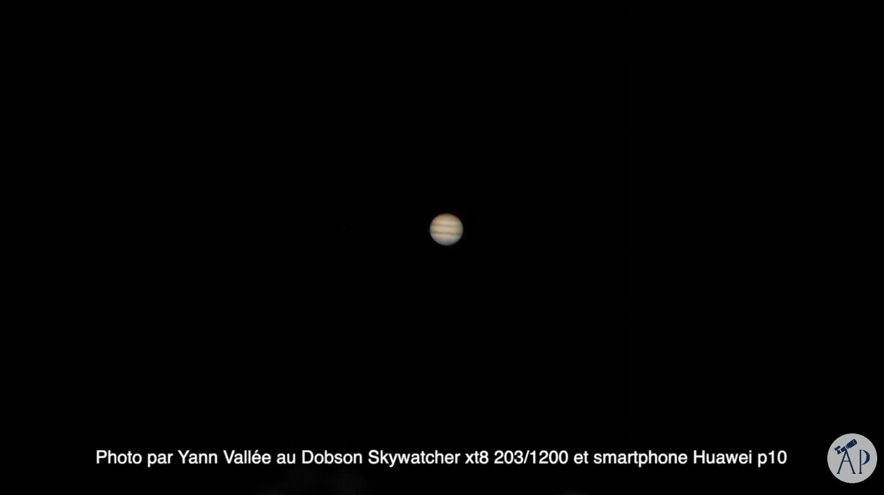
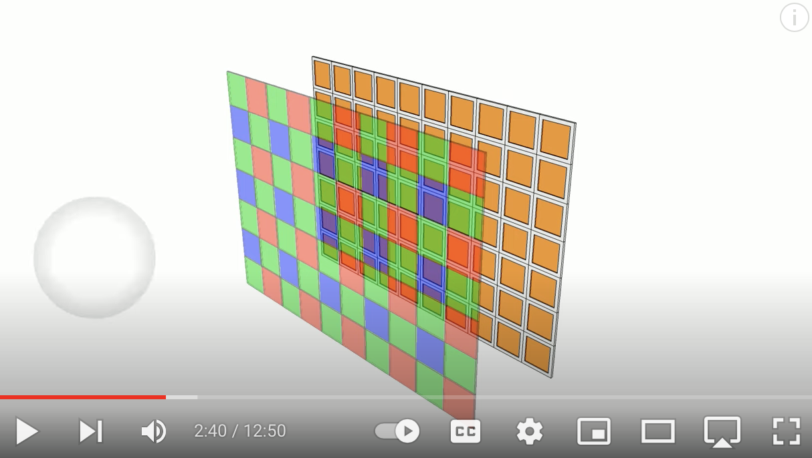
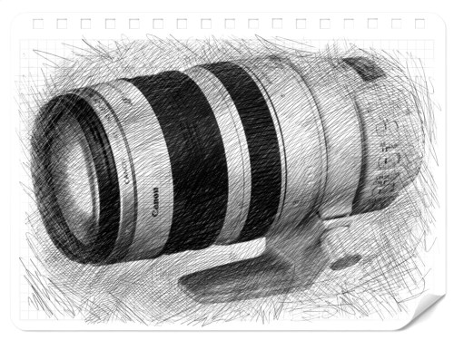
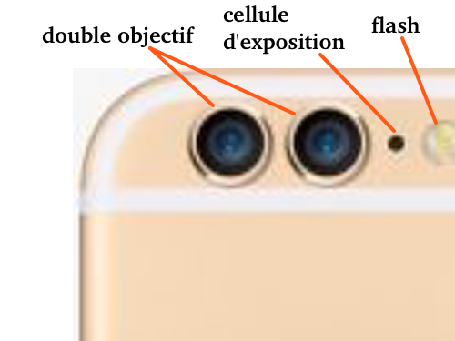
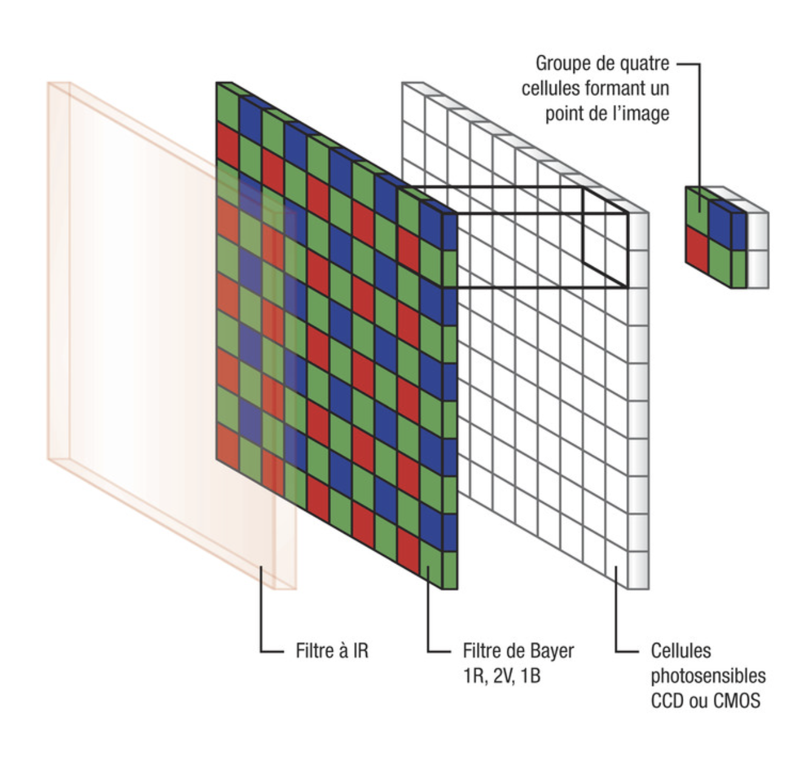
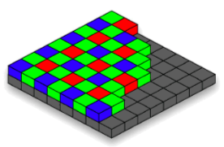
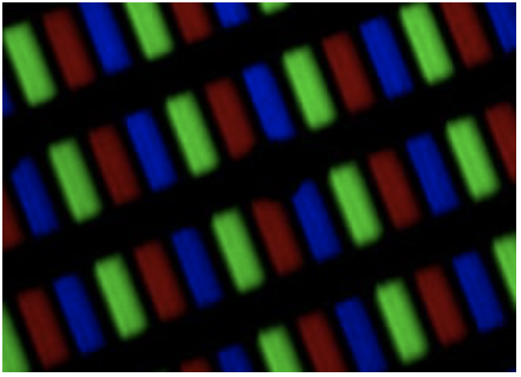
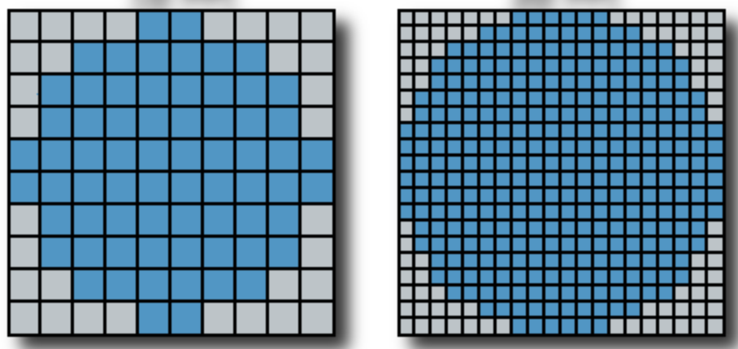
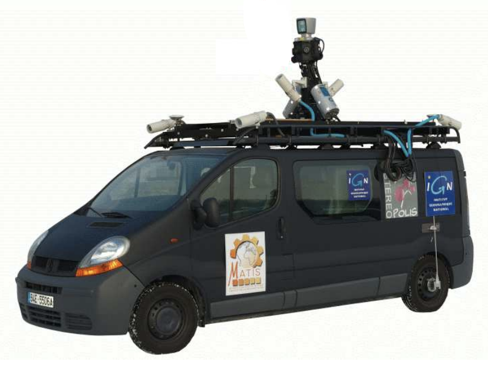
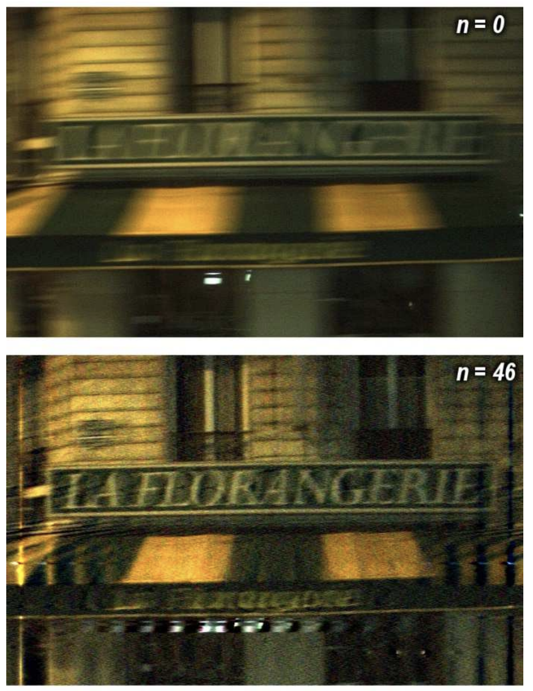

Photographie numérique
Peut-on faire de l’astrophotographie avec un smartphone?

Jupyter au smartphone
En disposant un smartphone sur un téléscope, on approche rapidement les limites de la qualité de l’appareil photo: sa capacité à capter les détails: les contours, les petits objets, le manque de contraste et de lumière.
On peut deviner que ce qui caractérise une image numérique, c’est:
- sa définition
- sa profondeur de couleurs
- son poids (en Mo)
Ces caractéristiques vont dépendre de la chaine d’acquisition de l’image, dont l’appareil photographique fait partie.
L’appareil photographique numérique
Présentation

Video: Fonctionnement d un appareil photo numérique
Composants principaux
On retrouve dans un appareil photographique numérique, ou pour la partie photographie d’un smartphone ou d’une tablette, les constituants suivant :
- L’objectif photographique : c’est un système optique, amovible ou non, convergent et composé généralement de plusieurs lentilles.

objectif d appareil photo

objectif photographique smartphone
-
La cellule d’exposition : c’est un composant électronique qui permet de mesurer la lumière renvoyée par le sujet et de régler l’ouverture du diaphragme, le temps d’ouverture de l’obturateur, et le déclenchement du flash. Cela permettra d’obtenir une exposition correcte.
-
L’obturateur est une piece qui s’ouvre et se ferme pour laisser passer la lumiere pendant un temps appelé temps d’obturation, choisi par le logiciel.
-
Le diaphragme : c’est une piece dont le diamètre (l’ouverture) est réglable. Ceci permet de limiter la quantité de lumière qui rentre dans l’appareil photographique.
-
un filtre de Bayer (RVB), sans qui la photo serait en N&B

filtre de bayer et photosite
- un capteur, constitué de photosites, répartis sur une grille. Ce capteur se trouve à l’endroit où la lumière est focalisée (nette). Les photosites transforment l’intensité lumineuse en signal électrique.
Cette grille de photosites correspond à la pellicule photosensible des appareils photo argentiques. Sauf qu’avec un appareil photo numérique, l’image est construite en données …numériques, qui correspondent aux pixels.
Sur l’image suivante, on voit que la grille contient des carrés constitués de 2 cellules sensibles au vert, 1 cellule au bleu et 1 cellule au rouge. Il y a donc 2 fois plus de cellules vertes que de cellules rouge ou bleu.

plan de photosites
- Une carte mémoire (SDcard), pour y enregistrer les images.
- un ordinateur interne capable de traiter des programmes.
Le plus petit détail d’une image: le PIXEL
L’image est construite en données numériques qui correspondent aux pixels.
C’est le grain de coloration d’une image, l’atome de l’image numérique.
La Definition d’une image correspond au nombre de pixels de l’image, exprimé en largeur * hauteur (par exemple 800 * 600).
Codage
Pour une image en noir et blanc: le codage numerique sera de 1 bit par pixel.
Pour une image couleur: Un des algorithmes possibles consiste à créer un pixel à partir de 4 photosites : un bleu, un rouge et deux verts. Un pixel sera alors composé de 3 couleurs : rouge, vert, bleu (RVB).
Restitution
Sur un écran numérique, un pixel est constitué de 3 diodes luminescentes, presque au contact, et qui vont restituer la couleur en un point. Ces 3 diodes constituent le pixel.
Lorsque l’on agrandit l’image, celle-ci parrait nette si la définition de l’image numérique est supérieure à celle de l’écran.

detail des pixels d'un iphone
De manière générale, c’est la densité de pixels qui va donner le détail de l’image. Elle est exprimée en pixels/cm ou pixels/pouces. C’est la résolution d’un écran.

faible/forte densité de pixels, image de formettic.be
image issue de la page formettic.be
réglages lors de la prise de photographie
Les réglages de l’appareil photographique se font la plupart du temps de manière automatique.
Mise au point: La mise au point est l’opération qui consiste, pour un photographe, à régler la netteté de l’image qu’il veut obtenir.
Algorithmes de prise de vue
l’appareil photographique est capable de mesurer la quantité de lumière, et de régler seul:
- le diapragme : c’est la taille de cette ouverture qui détermine la quantité de lumière arrivant sur le capteur.
- la vitesse d’obturation : correspond à l’intervalle de temps durant laquelle l’obturateur de l’appareil photo laisse entrer la lumière. Plus cette vitesse est lente et plus l’appareil photo capte la lumière. L’ image sera alors plus lumineuse. Ce réglage influe aussi sur la profondeur de champs, et la netteté des images pour des sujets en mouvement (mode sport).
Algorithme d’aide à la mise au point
Parfois, la mise au point automatique n’est pas possible. Certains appareils photographiques proposent une option d’aide appelée le Focus Peaking (l’intensification de la mise au point). C’est utile lorsque le sujet manque de lumière, ou que l’on utilise un objectif manuel.
En rouge, le focus peaking qui indique la zone de mise au point
Algorithmes de correction
Correction du flou: Une image floue est une image dont la valeur radiométrique de chaque pixel a été altérée localement par les valeurs des pixels au voisinage. Ce problème est du au temps d’exposition qui est trop long.
Les algorithmes de correction de flou on beaucoup progressé avec la cartographie mobile. En effet, il n’était pas possible de ralentir le vehicule lors des prises de vues (circulation routière de jour), ni d’utiliser de flash puissant pour éclairer les façades (nuit).

véhicules terrestres decartographie mobile

résultat du traitement par algorithme
Qu’est ce qu’une photographie numérique ?
Une photographie numérique, comme tout autre objet numérique, c’est un fichier de données numériques, c’est à dire des valeurs codées en binaire.
Une partie des données correspond à des métadonnées, c’est à dire des données périphériques. L’autre partie contient les données relatives à l’image: pour chaque pixel, le fichier contient les données des intensités RVB.
On pourra consulter la page sur les
- codages numeriques pour la suite du cours sur le codage de l’image.
- enjeux éthiques et sociétaux de l’image
- Données EXIF pour plus de détails sur les métadonnées.